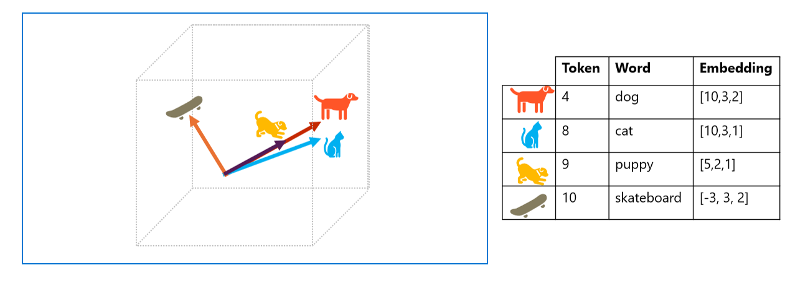

🧠NLP: How AI Understands Us

💬 What’s NLP?
NLP = Natural Language Processing
It’s how computers learn to read, listen, and talk like humans. 🤖🗣️
Basically, it helps AI understand our words and respond in smart ways.

🔍 What’s Text Analysis?
Text analysis is the part of NLP that pulls info from messy, unstructured text.
It’s like giving AI a superpower to find meaning in our words. 💥📚
🔥 6 Cool Things NLP Can Do
{kind=link}
Here are some epic use cases:
-
🎙️ Speech-to-Text & Text-to-Speech
Turn voice into text (hello subtitles!) or text into voice. -
🌠Machine Translation
Translate stuff — like English to Japanese. Say it in any language! -
📥 Text Classification
Sort emails into spam or not spam. 📨🚫 -
🏷️ Entity Extraction
Pull out keywords, names, or important info from docs. -
❓ Question Answering
Ask: “What’s the capital of France?†Get: “Paris!†🇫🇷 -
✂️ Text Summarization
Turn a long doc into a short, snappy summary. 📝⚡
🧠Why It’s Tricky
Language is messy. Humans are complex.
But thanks to AI + NLP, computers are finally catching up. 💪🤓
🧠How AI Learns to Read: Language Processing 101
📚 From Words to Meaning
Back in the day, computers tried to figure out what text meant by counting words.
More mentions = more important. Simple, right? 🤓
✂️ Tokenization: Breaking It Down
First step? Chop up the text into tokens — tiny pieces of meaning.
Usually, each word = one token, but it can also be part of a word or even punctuation. 🧩
Example:
"we choose to go to the moon" becomes:
- we
- choose
- to
- go
- the
- moon
So the sentence = {1, 2, 3, 4, 3, 5, 6}
(Yes, “to†shows up twice!)
🧠Smart Token Tricks
Here are some cool ways to make tokenization even smarter:
| 💡 Concept | 🔠What It Means |
|---|---|
| 🔄 Text Normalization | Clean up the text (lowercase, remove punctuation) — but be careful not to lose meaning! |
| 🚫 Stop Word Removal | Toss out boring words like “the†or “a†that don’t add much value |
| 🔗 n-grams | Group words together: “I have†= bi-gram, “he walked away†= tri-gram |
| 🌱 Stemming | Combine similar words like “power”, “powered”, “powerful†into one token |
🔜 What’s Next?
Now that we’ve chopped up the text, let’s see how AI uses stats to actually model language and make sense of it! 📊ğŸ§
📊 How AI Gets Smart with Stats: NLP Edition
🧠Two OG Techniques in NLP
Let’s talk about two classic moves that helped AI learn to read:
1️⃣ Naïve Bayes
Used to spot spammy emails 💌🚫
It checks which words show up in spam vs. normal emails.
Example: “miracle cure†or “lose weight fast†= 🚨 spam alert!
It’s called “naïve†because it doesn’t care where the words are — just that they’re there.
Simple, but effective!
2️⃣ TF-IDF (aka Term Frequency - Inverse Document Frequency)
This one’s all about context.
It checks how often a word shows up in one doc vs. a whole bunch of docs. 📚
If a word pops up a lot in one doc but not in others, it’s probably important! 💡
Used for search engines, info retrieval, and topic detection.
📚 What’s a Corpus?
A corpus = a big collection of texts used to train AI.
More data = smarter AI. 🧠💾
🔠Example Time!
Take the phrase:
"we choose to go to the moon"
After tokenizing, we count the words.
Most common ones (like “moon”, “space”, “go”) tell us the doc is about 🚀 space travel!
If we use bi-grams (word pairs), “the moon†is a top hit. 🌕
🧠Why TF-IDF Rocks
Simple word counts are cool for one doc.
But TF-IDF helps compare across lots of docs to find what really matters.
It gives high scores to words that are 🔥 in one doc but meh in others.
🔜 What’s Next?
Let’s level up and explore how deep learning takes NLP to the next dimension! 🧠💥
🧠Understand Semantic Language Models
🌠What’s the Big Idea?
Modern AI models are super smart because they understand how words relate to each other. They do this using embeddings — fancy math that turns words into vectors (a kind of number line in 3D or more dimensions).

{kind=link}
📊 Vectors Explained

Imagine each word is a rocket flying in space. The direction it flies shows what it means. Words that mean similar things fly in the same direction.
Example Vectors:
- "dog": [10, 3, 2]
- "bark": [10, 2, 2]
- "cat": [10, 3, 1]
- "meow": [10, 2, 1]
- "skateboard": [-3, 3, 2]
🧠AI and Language
🟢 Similar Word Directions
Words like “dog”, “bark”, “cat”, and “meow†fly in similar directions.
🔴 “Skateboard†zooms off in a totally different way!
🧬 How AI Learns Language
AI reads tons of text and breaks it into tokens (tiny pieces of words).
Then it turns those tokens into vectors and learns how they relate.
This helps AI do cool stuff like:
- 🌠Translate languages
- ❓ Answer questions
- ✍️ Write stories
- 😄 Detect emotions
Real-world models are way more complex — they use vectors with lots more dimensions and different ways to calculate them.
That’s why different models sometimes give different answers!
🧠What’s a Language Model?
A language model is like a super brain that learns from reading a huge pile of text.
It breaks the text into tokens, turns them into vectors, and trains itself to understand meaning.
Then it can help with all kinds of tasks like:
- 💬 Chatting with people
- 🌠Translating languages
- 🔠Finding answers
- 📠Writing cool stuff
💬 Teaching AI to Spot Good or Bad Vibes
We can train AI to tell if a message is positive or negative using examples.
This is called sentiment analysis.
🍽️ Restaurant Reviews:
- "The food and service were both great" → 1 (positive)
- "A really terrible experience" → 0 (negative)
- "Mmm! tasty food and a fun vibe" → 1 (positive)
- "Slow service and substandard food" → 0 (negative)
The AI Learns: Words like "great", "tasty", and "fun" = 👠Words like "terrible", "slow", and "substandard" = ğŸ‘
🧪 How It Works
We give the AI lots of labeled reviews. It learns which words match which feelings. Then it can guess the vibe of new reviews all by itself!
This is done using a classification algorithm like logistic regression — a fancy name for a math tool that helps AI make decisions.
🧠Big Picture
Most modern AI systems start by reading a huge pile of text. They break it into tokens, turn those into vectors, and train models to do all kinds of language tasks — like:
- 💬 Chatting
- 🌠Translating
- 🔠Finding info
Different ways of creating embeddings = different predictions. More dimensions = more powerful understanding.
🉠Wrap-Up
AI doesn’t just read — it understands language using math magic and smart training. Pretty awesome, right?
✅ Check Your Knowledge
1️⃣ What is the primary purpose of tokenization in natural language processing (NLP)?
- To translate text into another language
- To summarize large documents
- To break down text into smaller units for analysis
2️⃣ Which of the following techniques is used to determine the importance of words in a document within the context of a larger collection of documents?
- Naïve Bayes
- TF-IDF (Term Frequency-Inverse Document Frequency)
- Word2Vec
3️⃣ Which of the following best describes the role of embeddings in natural language processing (NLP)?
- They visualize text data in two-dimensional space for easier interpretation
- They summarize large text corpora into short, meaningful sentences
- They convert language tokens into vectors that capture semantic relationships